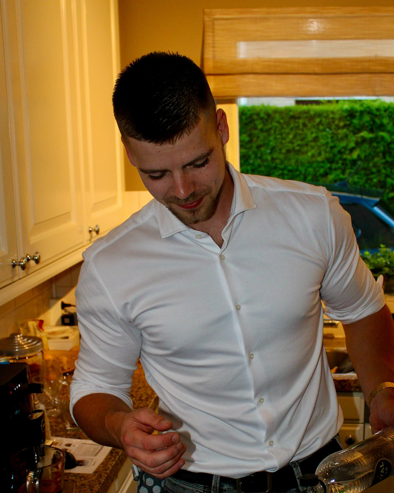
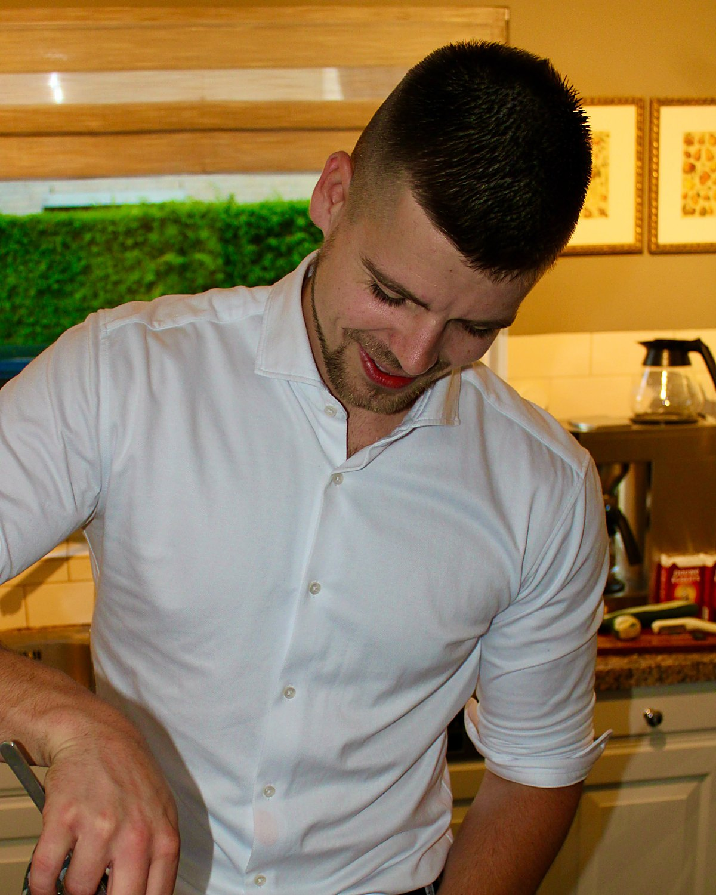
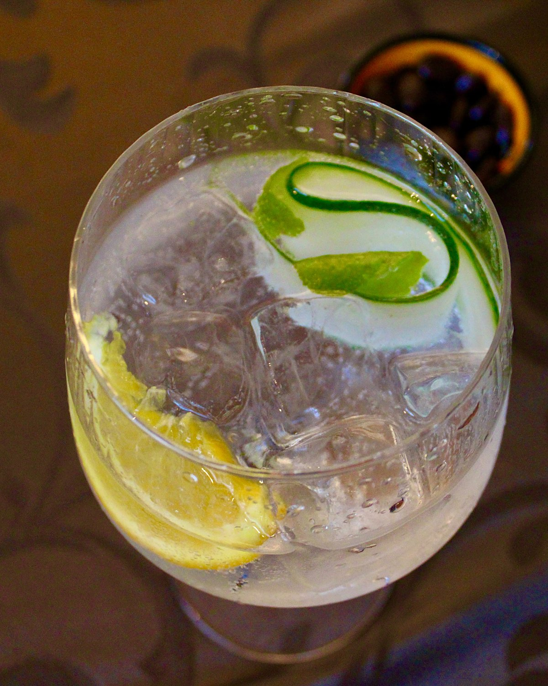
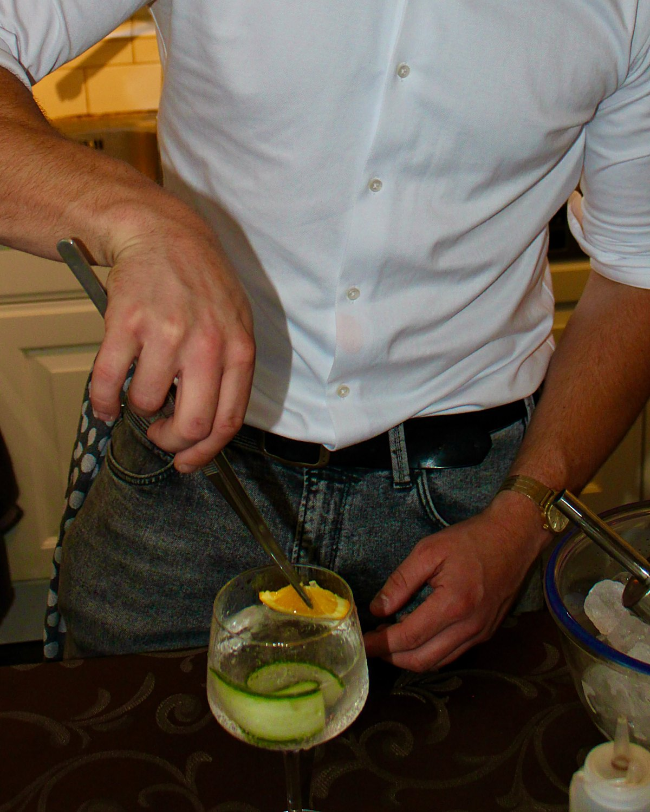

💍
Bruiloften
Een welkomstcocktail bij aankomst, een signature drankje voor het bruidspaar en een bar die doorgaat tot de laatste dans.
Freelance bartender te huur
Ik kom achter de bar staan op jouw feest, met vakmanschap, mijn eigen bartools en een cocktailkaart op maat. Jij zorgt voor de drank, ik zorg dat elk glas klopt.
Wie ik ben, waar ik het vak heb geleerd en hoe ik werk.
Lees meer → 02De klassiekers uit mijn EBS-opleiding, mocktails en cocktails op maat.
Bekijk de kaart → 03Vanaf €45 per uur, geen aanbetaling. Reken direct uit wat het kost.
Naar de prijzen → 04Vertel me over je feest. Je hoort binnen 48 uur van me.
Aanvraag doen →
Over mij
Ik ben een enthousiaste, beginnende bartender en sta met ontzettend veel plezier achter de bar. Ik deed ervaring op in een hotelbar en volgde een volwaardige cocktailopleiding bij de European Bartender School (EBS) in Barcelona.
Inmiddels heb ik meerdere events gedraaid. Met Beck on the Rocks kom ik naar jouw feest, met een cocktailkaart op maat, verse garnituren en vooral veel gastvrijheid. Ik maak een praatje, lees de zaal en zorg dat niemand lang op zijn drankje wacht.
Ervaring
Van mijn eerste shifts tot mijn eigen bartenderbedrijf.
Hier leerde ik het vak in de praktijk: gasten ontvangen, netjes en snel werken en klassiekers schenken.
Een volwaardige cocktailopleiding bij de European Bartender School: techniek, recepturen, snelheid en presentatie.
Feesten en events waar ik achter de bar stond en gasten liet genieten van mijn cocktails.
Als freelance bartender kom ik naar jouw feest, overal in Nederland.
Sfeerbeelden
Een kijkje achter de bar.



De kaart
Dit zijn de cocktails die ik bij de European Bartender School heb geleerd. Kies er 1 tot 5 voor je kaart (standaard 3), of laat een eigen cocktail voor je feest creëren. Je krijgt er een boodschappenlijst bij met alles wat je nodig hebt.
Even spelen
Beantwoord drie vragen en ontdek je perfecte drankje.
Diensten
Je huurt mij in als bartender. Ik neem mijn bartools en een cocktailkaart op maat mee; jij zorgt voor de drank, het ijs en een werkplek.
Een welkomstcocktail bij aankomst, een signature drankje voor het bruidspaar en een bar die doorgaat tot de laatste dans.
Borrels, jubilea en personeelsfeesten. Desgewenst met een cocktail in de kleuren van je bedrijf.
Verjaardag, jubileum of gewoon zin in een avond vol goede drankjes. Thuis, in de tuin of op locatie.
Een aperitief bij aankomst en een digestief na het dessert. Klein gezelschap, groot verschil.
Personeel tekort of een drukke avond? Ik spring in achter je bar en draai direct mee.
Een eigen cocktail voor jullie feest, met een naam en smaak die bij jullie past. Ook alcoholvrij.
Werkwijze
Een kort belletje. Wat voor feest, hoeveel gasten, welke sfeer?
Je kiest 1 tot 5 cocktails (standaard 3) en ontvangt een duidelijke offerte.
Je ontvangt een lijst met precies de drank, het ijs en de ingrediënten die je nodig hebt.
Ik kom op tijd, richt mijn werkplek in en shake tot het einde van het feest.
Prijzen
Je huurt mij in als bartender. Drank en ijs regel je zelf; ik neem mijn eigen bartools mee en zorg voor de cocktailkaart. Je ontvangt altijd een offerte op maat.
€45 per uur
Voor elk uur dat ik achter de bar sta.
Liever vers geperste sappen? Ik neem mijn fruitpers mee. Omdat vers persen extra werk is, wordt het uurtarief €54 (+20%) en het cocktailmenu vanaf €99.
Voorbeeld 4 uur: 4 × €54 + €54 + €99 = €369
Ik werk in heel Nederland. Reiskosten reken ik per kilometer.
Je regelt zelf glazen, of ik regel ze voor je tegen een meerprijs: vanaf €0,50 per glas.
Een eigen cocktail voor jullie feest, ontwikkeld en getest. Prijs in overleg.
Reken het uit
Vul je feest in voor een indicatie. Boek je binnen een maand voor het feest, dan rekent de calculator automatisch de spoedtoeslag mee.
Goed om te weten
Ik spaar voor een eigen mobiele bar. Tot die er is, vraag ik je om een werkplek te regelen.
Reviews
Beck on the Rocks is net begonnen, dus elke review helpt enorm. Ik zou het heel fijn vinden als je je ervaring deelt.
Veelgestelde vragen
Nee. Je huurt mij in als bartender, dus drank, ijs en verse ingrediënten regel je zelf. Je krijgt van mij wel een boodschappenlijst op maat, zodat je precies weet wat en hoeveel je moet halen.
Al mijn professionele bartools (shakers, jiggers, strainers, barlepels en meer) en een cocktailkaart die ik speciaal voor jouw feest samenstel. Op verzoek neem ik ook mijn fruitpers mee voor vers geperste sappen.
Een werkplek: een stevige tafel of bar, bij voorkeur in de buurt van water. Ik heb nog geen eigen mobiele bar, dus tot die er is vraag ik je dit te regelen.
€45 per uur achter de bar, plus altijd 1 uur voorbereiding (€45) en vanaf €75 voor het cocktailmenu en gebruik van mijn materialen. Een feest van 4 uur kost dus vanaf €300, plus reiskosten. Op de prijzenpagina reken je het direct uit.
Ik neem dan mijn fruitpers mee en pers de sappen vers. Dat is extra werk, dus het uurtarief wordt €54 (+20%) en het cocktailmenu vanaf €99.
Alle cocktails die ik bij de European Bartender School in Barcelona heb geleerd, plus mocktails. Je kiest er 1 tot 5 voor je kaart, standaard 3. Een eigen cocktail voor je feest laten creëren kan ook.
In overleg. Je kunt zelf glazen regelen, of ik regel ze voor je tegen een meerprijs, vanaf €0,50 per glas.
Ik werk in heel Nederland. Reiskosten reken ik à €0,25 per kilometer.
Boek uiterlijk een maand voor je feest. Binnen een maand kan het vaak nog wel, maar dan geldt een spoedtoeslag van 25% over alle kosten.
Nee, een aanbetaling is niet nodig.
Tot 14 dagen voor het feest annuleer je kosteloos. Annuleer je binnen 14 dagen, dan reken ik 20% van het afgesproken bedrag.
Zeker. Ik zet graag volwaardige mocktails op de kaart, zodat niemand met een glas cola hoeft te staan.
Boek Rutger
Vertel me over je feest en je hoort binnen 48 uur van me.